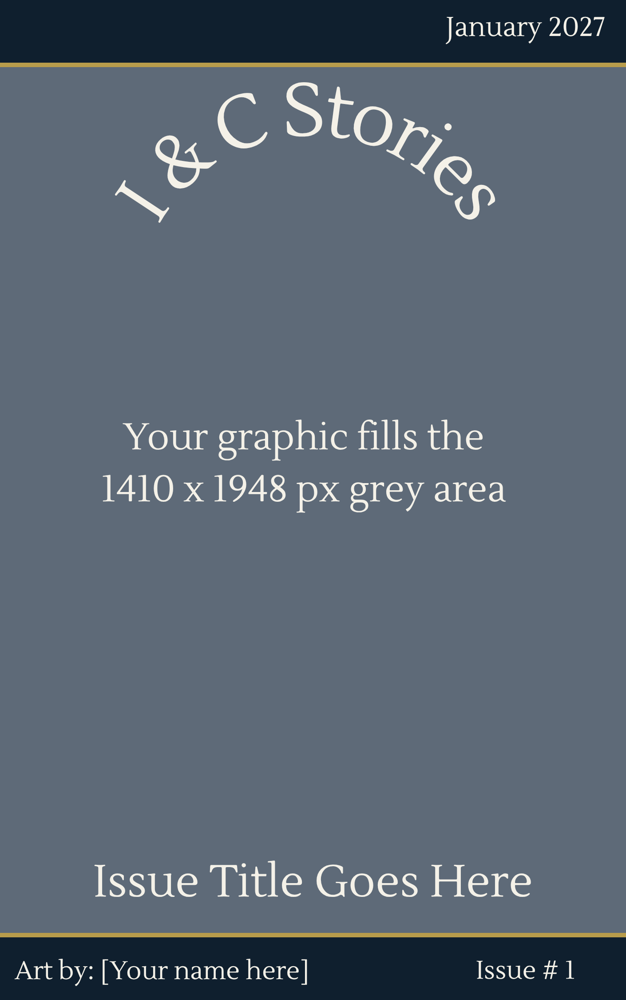

Guidelines
What We Publish
- Monthly theme-based issues
- Original short fiction only
- Maximum 6,000 words
- One story per submission
- No fan fiction
- No poetry
- No novellas or novels
All submissions must align with our editorial standards. Gratuitous sexual content, exploitative violence, or material intended primarily to shock rather than serve the story will not be considered.
Format & Submission Requirements
- Submit as a Microsoft Word document (.doc or .docx)
- Begin with a blank first page
- Do not include your name or identifying information in the manuscript
- All submissions are evaluated blind
Submissions that do not follow these guidelines will be returned unread.
Publication Policy
- Previously published work is not eligible
- Simultaneous submissions are permitted; notify us immediately if your work is accepted elsewhere
- Do not submit the same work through multiple platforms
AI Policy
Responsible use of AI as a drafting or brainstorming tool is permitted. The story itself must be human-built, human-directed, and human-authored. Submissions generated primarily by AI will not be considered.
Response Time
Current response time is 2–4 weeks.
Rights
Upon acceptance, Ink & Consequences requires exclusive first serial publication rights to the work beginning on the date of acceptance and continuing until 90 days after its initial publication in Ink & Consequences.
During this period, the work may not be published or made available elsewhere.
Ink & Consequences retains the nonexclusive right to archive, display, and distribute the work as part of digital back issues, promotional materials, and the annual Ink & Consequences anthology.
Authors may opt out of anthology inclusion during the contract signing process.
All rights not expressly granted remain with the author.
Compensation
Ink & Consequences is a free publication and does not provide upfront monetary compensation for works published in the magazine.
Accepted authors receive publication in the issue release and inclusion in the annual contributor directory and anthology.
Authors that participate in the annual I & C Stories anthology are eligible to receive royalty payments based on anthology sales for the year they are published in. Royalty terms and participation options are detailed in the publication contract provided upon acceptance.
How to Submit
We accept submissions through Duosuma.
Submissions open July 1 and close December 31, or earlier if editorial capacity is reached.
Art Submission Guidelines
I&C Stories is currently seeking original artwork for upcoming issues. Selected pieces will be featured as official issue covers.
Design Guidelines
- Keep key visual elements within the grey safe area, but avoid placing focal points in the center, as this area is reserved for the title overlay
- Avoid placing important details near the top or bottom edges (these areas will be covered by text)
- Artwork should reflect the tone, concept, or emotional core of a specific issue theme, as cover images serve as the visual representation of that theme in our archives.
Credits
Selected artists will be credited on the cover and within the issue on the cover page. On the cover, credit will appear as “Art by: [Artist Name]” in the lower bar of the design.
AI Policy
Responsible use of AI as part of the creative process (e.g., brainstorming or reference generation) is permitted. Submitted artwork must be primarily created by the artist. Works generated primarily by AI will not be considered.
Compensation
At this time, I&C Stories is unable to offer monetary compensation for cover art. Selected artists will receive full credit within the issue and inclusion in our contributor directory.
Our long-term goal is to compensate all contributors, and we are actively working toward that model.
Response Time
Current response time is 2–4 weeks.
Rights
If selected for publication, you will be asked to sign a contract outlining rights and permissions.
In general, I&C Stories requests first publication rights and the right to display the artwork as part of the issue and its associated promotional materials.
Artists retain full ownership of their work. Following publication, all rights remain with the artist, with the exception that I&C Stories may continue to display the artwork as part of the issue archive.
Blind Submissions
Submissions are reviewed blind. Do not include your name, signature, watermark, or any identifying information within the artwork itself, including within the template area shown below.
Cover Art Specific Guidelines
Specifications
- Dimensions: 1410 × 1948 pixels
- Resolution: 300 DPI recommended
- Format: PNG preferred, JPG accepted
- No text, logos, or watermarks on the artwork
Template
Your artwork should be designed to fit within the grey area shown below. All titles, branding, and credits will be applied by our team to ensure consistency across issues.

How to Submit
We accept submissions through Duosuma.
Story Art Guidelines
Story art is used as a sticky header image at the top of each story page. The story title will be placed directly on the image by our team, and story and art credits will appear in a small caption beneath the header.
Specifications
- Dimensions: 1600 × 400 pixels
- Format: PNG preferred, JPG accepted
- No signatures, watermarks, embedded credits, or additional text
- Keep key visual elements away from the title area
- Artwork should be theme-specific rather than general-purpose
Artwork should reflect the tone, mood, or emotional core of a specific issue theme. Final pairing of artwork to individual stories will be determined during production. Because the title will be placed over the image, keep the center title area visually clear and avoid placing important details where text will appear.
How to Submit
We accept submissions through Duosuma.